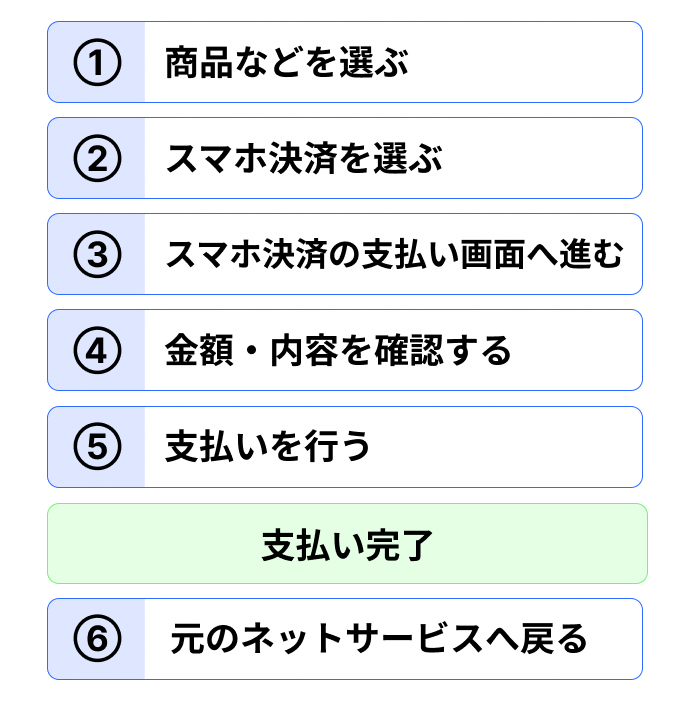

6. ネットサービスで支払う
スマホ決済は、店舗だけでなく、対応しているネットサービスでも利用できます。
たとえば、ネットショッピングやモバイルオーダーなどで、支払い方法としてスマホ決済を選べる場合があります。
ネットサービスでは、利用しているサービスの画面からスマホ決済の支払い画面へ移動して、支払いを行うことがあります。
この教材では、次のような流れで支払いを行います。

スマホ決済の支払い画面が表示された後は、表示されている金額や内容を確認し、その後に支払いの操作を行います。
そのため、スマホ決済の画面が表示された段階では、その後に確認や操作が残っていることがあります。
支払いが完了すると、支払った金額の分だけ残高が少なくなります。また、支払った内容はあとから利用履歴で確認できます。
ポイント
ネットサービスでスマホ決済を利用するときは、支払い画面に進んだ後、内容を確認して支払いの操作を行います。